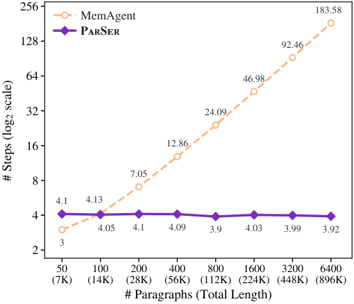

⇶
Parallel reading
Every document chunk is inspected concurrently and symmetrically by a dedicated reader.
The order of a document should not dictate the order of reasoning.
The Chinese University of Hong Kong *Core contributors
Long document
Introduction 引言
Sequential memory agents read long documents chunk by chunk while maintaining a compact memory state. This couples document traversal to reasoning depth, making accuracy sensitive to where evidence appears and forcing latency to grow with document length.
PARSER turns document length from sequential depth into parallel width. Lightweight subagents read every chunk concurrently, while a lead agent iteratively asks focused questions, gathers evidence, and reasons across only the rounds the problem actually requires.
Every document chunk is inspected concurrently and symmetrically by a dedicated reader.
The lead agent refines queries across scatter–gather rounds as new evidence emerges.
Only the lead policy is optimized with verifiable rewards; lightweight readers stay frozen.
“Read the document in parallel. Reserve sequential computation for reasoning.”
Method 方法介绍

Each frozen subagent is bound to one short chunk. Given a focused query, it returns grounded evidence or abstains. All readers execute concurrently.
The lead agent sees the question and gathered findings—but no raw document tokens. It decides what to ask next and when to answer.
Every round re-reads all chunks under an evidence-conditioned query, resolving cross-chunk dependencies without recurrent compression.
GRPO with exact-match rewards teaches the lead agent to decompose questions, coordinate readers, and commit to accurate answers.
Experiments 实验分析
Across HotpotQA and 2WikiMultiHopQA from 7K to 896K tokens, PARSER remains nearly length-invariant while full-context and sequential-memory methods degrade.
HotpotQA · 4B
84.6% average accuracy +5.7 points over the strongest sequential baselineHotpotQA · 9B
86.8% average accuracy +6.3 points over DeepSeek-V4-Pro896K tokens · 4B
+12.0 percentage points over the strongest sequential memory baseline
Engineering Design 工程设计
10 × H100 serving frozen subagents
Policy updating and rollout generation run continuously on separate GPU pools. Subagents keep serving requests while the lead policy is updated, eliminating idle time between training stages.

PARSER holds reasoning depth near four steps as documents grow, while MemAgent's dependent updates climb to more than 180.
Conclusion 总结
PARSER shows that effective long-context reasoning does not require every reasoning step to carry the document forward. By separating local reading from global reasoning, it remains accurate across extreme lengths and robust to where evidence is placed.
The resulting architecture is simple to optimize: freeze lightweight readers, train one lead policy with verifiable rewards, and scale document coverage through parallel width.
Citation 引用
@article{li2026parser,
title = {PARSER: Read in Parallel, Reason in Depth for Long-Context LLM Agents},
author = {Li, Kun and Qiu, Zexuan and Zhang, Tianhua and King, Irwin and Meng, Helen},
journal = {arXiv preprint},
year = {2026}
}